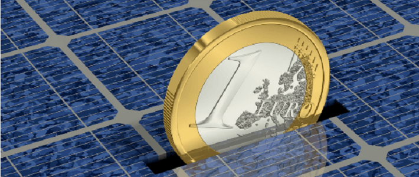

Eléments financiers
Le prix d'une installation

* Panneaux : entre 3 et 6 € HT par Wc (Watt crête), soit 9000 € à 18000 € pour une installation « typique » de 3 kWc.
* Onduleur (et matériels annexes) : de 0,5 € à 1 € HT par Wc, soit 1500 à 3000 € pour une installation de 3kWc.
* Pose : à partir de 2000 € HT, suivi administratif inclus. Variable selon les contraintes techniques (intégration à la toiture, pose au sol?) et la surface de panneaux.
* Raccordement au réseau : entre 1000 et 1500 € HT pour les raccordements standards d'installation de faible puissance (inférieure à 36 KVA) ; au-delà le coût dépend des travaux à effectuer sur le réseau et peut être très élevé (jusqu'à compromettre l'équilibre financier du projet).
* Démarches administratives : quelques centaines d'euros
* Assurance Responsabilité Civile obligatoire : de gratuite (intégrée à l'assurance multirisque du bâtiment) à quelques centaines d'euros par an.
* Maintenance : remplacement de l'onduleur tous les 10 ans, nettoyage régulier des panneaux.
Ces prix sont donnés à titre indicatif et dépendent des évolutions technologiques, des conditions particulières de l'installation, et de la puissance installée.
Financer son installation
** !!!! ** Attention, ces informations sont indicatives. Les dispositifs d'aides publiques peuvent avoir évolué depuis la rédaction de ce guide. Seules les aides principales sont traitées.
La fiscalité
- La TVA à 5,5% :
Elle est applicable aux installations photovoltaïques, pour la fourniture et la main d'oeuvre aux conditions suivantes :
* Maison ou bâtiment achevé depuis plus de deux ans.
* Travaux commandés par le propriétaire, ou l'occupant des lieux
* Réalisés par une entreprise du bâtiment
* Avec des matériels répondant aux normes en vigueur
* Puissance de l'installation inférieure ou égale à 3 kWc
* Vente de l'excédent ou de la totalité de la production (sites isolés ou autoconsommation exclus)
Cette réduction de TVA correspond à une réduction du prix TTC d'environ 12%.- Le crédit d'impôt :
Le crédit d'impôt concerne uniquement le matériel (la pose devant impérativement être effectuée par une entreprise ou un artisan).
Depuis le 01 janvier 2011, le taux appliqué est de 22%.
Le montant des équipements pris en compte est plafonné à :
* 8000 € pour une personne célibataire, veuve ou divorcée, + 400 € par personne à charge,
* 16 000 € pour un couple marié ou lié par un PACS soumis à imposition commune + 400 € par personne à charge.
De plus, les éventuelles aides à l'achat de matériel obtenues par ailleurs (conseil régional, conseil général, Anah?) doivent être déduites du montant des travaux avant le calcul du crédit d'impôt. En revanche, les éventuelles aides à l'installation du matériel n'ont pas à être déduites.
Sont exclues du crédit d'impôts, les installations dont la production totale annuelle dépasse le double de la consommation du foyer. Par dérogation, toutes les installations de moins de 3 kWc sont éligibles.Enfin, les systèmes utilisés doivent répondre aux normes en vigueur (NF-CEI 61215 ou NF-CEI 61646, selon la technologie des panneaux).
- L'exonération d'impôt sur les revenus générés par l'installation :
* Les revenus des installations de moins de 3 kWc ne sont pas soumis à l'impôt, ni à la CSGCRDS, dans la limite de deux postes de productions par foyer fiscal (exemple : résidence principale et secondaire).
* Au-delà de 3 kWc, les particuliers sont considérés comme des producteurs professionnels. Ils doivent donc opter pour un statut adapté à leur situation et à leur projet (auto-entrepreneur, micro-entreprise, Sarl...).
* Ces projets sont également soumis à la CET (Contribution Economique Territoriale, ex taxe professionnelle) et aux charges sociales.
- L'exonération de taxe foncière :
* Certaines communes proposent une exonération de la taxe foncière pour les bâtiments supportant des panneaux photovoltaïques. Voir les conditions auprès de la mairie le cas échéant.
Les subventions
- ANAH (Agence Nationale de l'Habitat) :
- Dans certaines conditions, trop complexes à exposer ici, l'Anah octroie des aides à l'installation de panneaux photovoltaïques. Consulter le « Guide des aides » sur le site www.anah.fr
- Aides locales :
- Les conseils généraux, les conseils régionaux, les intercommunalités, et divers organismes locaux proposent parfois des subventions. Ces aides sont généralement répertoriées dans les « espaces info-énergie » locaux.
Exemple : le Conseil régional de Basse-Normandie offre, sous conditions, un chèque énergie de 700 €.Les tarifs d'achat de votre production
**En théorie, il est possible de vendre sa production à n'importe quel opérateur ; en pratique, dans la quasi-totalité des cas, l'électricité produite est achetée par EDF.**
Le contrat avec EDF est conclu :
* - pour une durée de 20 ans
* - à un tarif d'achat garanti pendant toute la durée du contrat
* - en fonction de la configuration de l'installation.
La production achetée à ce tarif est cependant plafonnée à 1500 heures de pleine production par an en France métropolitaine (1800 heures hors métropole), au-delà, le surplus n'est acheté que 5c€/hWh. Ces tarifs sont réévalués chaque année en fonction du coût de la vie (indices Insee).
Ainsi, par exemple, une installation de 3 kWc ne vendra au prix fort que 3 x 1500 = 4500 kWh, le reste étant acheté au tarif de surplus.
Chaque trimestre, les prix d'achat pour les nouveaux contrats sont revus à la baisse en fonction du rapprochement du parc installé avec les objectifs fixés par le gouvernement (500 MWc par an). Cette baisse, par définition inconnue à l'avance, pourra théoriquement atteindre 30% par an (9,5% par trimestre). Les juristes à tendance « matheuse » peuvent décortiquer le texte officiel ici (bon courage !)